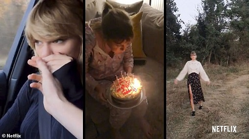

My baby's fit like a daydream
Walking with his head down
I'm the one he's walking to
So call it what you want, yeah, call it what you want to
My baby's fly like a jet stream
High above the whole scene
Loves me like I'm brand new
So call it what you want, yeah, call it what you want to
All my flowers grew back as thorns
Windows boarded up after the storm
He built a fire just to keep me warm
All the drama queens taking swings
All the jokers dressin' up as kings
They fade to nothing when I look at him
And I know I make the same mistakes every time
Bridges burn, I never learn, at least I did one thing right
I did one thing right
I'm laughing with my lover, making forts under covers
Trust him like a brother, yeah, you know I did one thing right
Starry eyes sparkin' up my darkest night
My baby's fit like a daydream
Walking with his head down
I'm the one he's walking to
So call it what you want, yeah, call it what you want to
My baby's fly like a jet stream
High above the whole scene
Loves me like I'm brand new
(Call it what you want, call it what you want, call it)
So call it what you want, yeah, call it what you want to
I want to wear his initial
On a chain round my neck, chain round my neck
Not because he owns me
But 'cause he really knows me
Which is more than they can say, I
I recall late November, holdin' my breath
Slowly I said, "You don't need to save me
But would you run away with me?"
Yes (would you run away?)
My baby's fit like a daydream
Walking with his head down
I'm the one he's walking to
(Call it what you want, call it what you want, call it)
So call it what you want, yeah, call it what you want to
My baby's fly like a jet stream
High above the whole scene
Loves me like I'm brand new
(Call it what you want, call it what you want, call it)
So call it what you want, yeah, call it what you want to
Call it what you want, yeah
Call it what you want
To